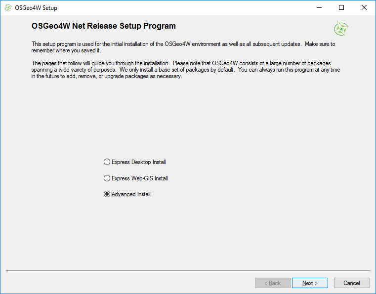
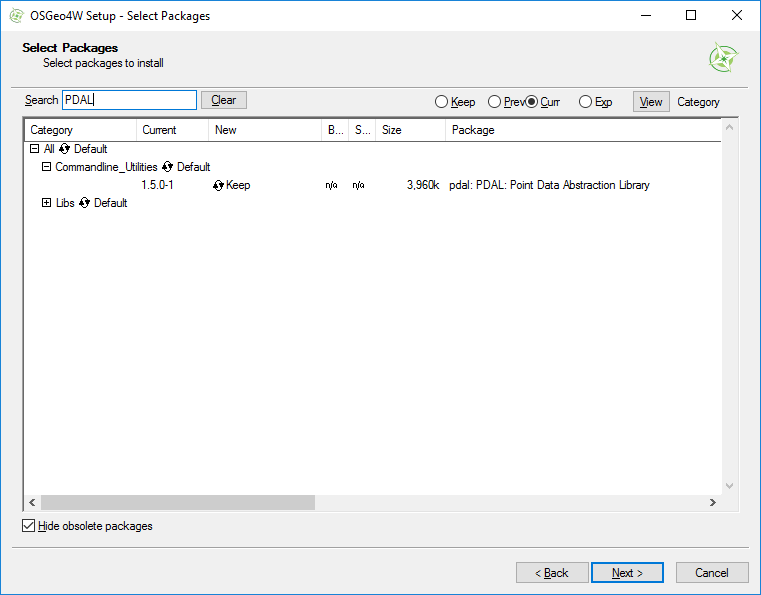
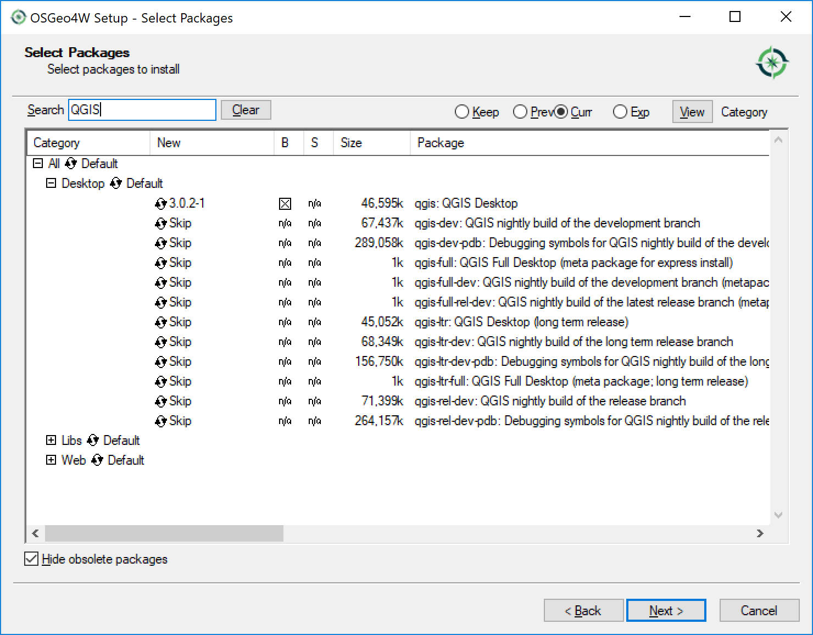
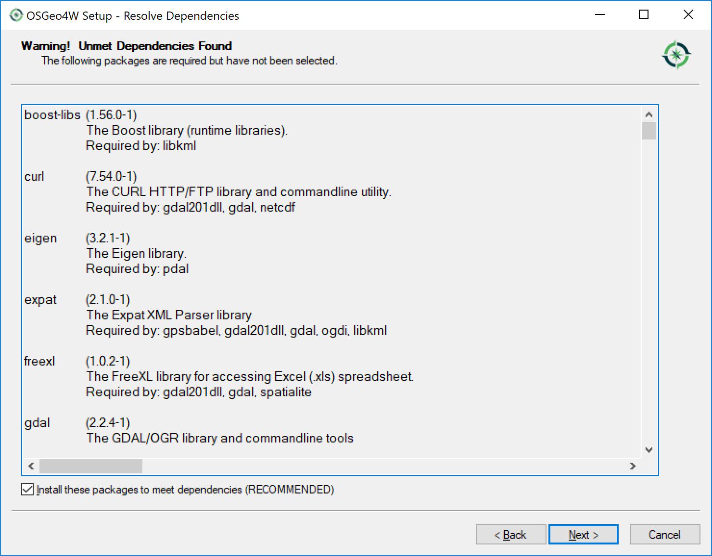
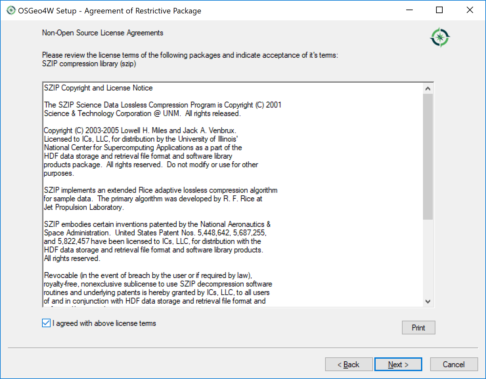

OSGeo4W¶
What is OSGeo4W?¶
OSGeo4W is a distribution of geospatial software built for Windows. The PDAL project provides Windows builds through this distribution.
How will we use OSGeo4W?¶
PDAL stands on the shoulders of giants. It uses GDAL, GEOS, and many other dependencies. Because of this, it is very challenging to build it yourself. We could easily burn an entire workshop learning the esoteric build miseries of PDAL and all of its dependencies. Fortunately, OSGeo4W provides us a fully-featured known configuration to run our examples and exercises without having to suffer so much.
Installing OSGeo4W¶
Copy the entire contents of your workshop USB key to a
PDALdirectory in your home directory (something likeC:\Users\hobu\PDAL). We will refer to this location for the rest of the workshop materials.Download the OSGeo4W setup.exe http://download.osgeo.org/osgeo4w/osgeo4w-setup-x86_64.exe
Warning
PDAL is only available via the 64-bit verison of OSGeo4W. There is an older 32-bit version, but none of the workshop materials will work in that environment. You must be able to run 64-bit Windows applications to follow this workshop.
Run the installer and choose the “Advanced Install” option.
Search for “PDAL” in the search box or drill down through the Commandline_Utilities section and choose the
PDALpackage.Search for “QGIS” in the search box or drill down through the Desktop section and choose the
QGISpackage. This will be used in a later section of the workshop.You will probably get a screen telling you that you have unmet dependencies. You must check the box next to
Install these packages to meet dependencies (RECOMMENDED)for PDAL to work.You will probably get at least one screen asking you to accept a license agreement. You must check the box next to
I agreed with the above license termson each screen for PDAL to work.